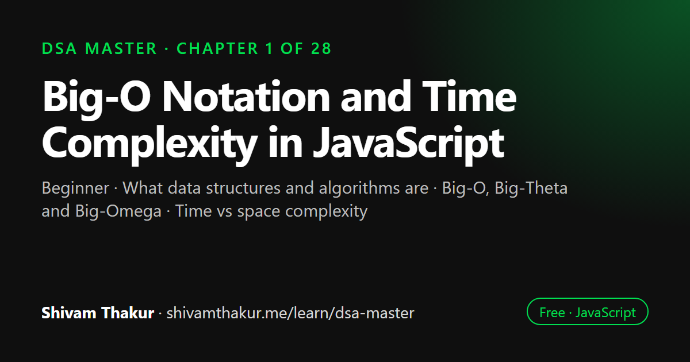

Chapter 1 of 28 · Beginner
Big-O Notation and Time Complexity in JavaScript
Welcome to the Machine — Introduction & The Big-O Masterclass

Big-O notation describes how an algorithm's running time or memory grows as the input grows, ignoring constants and machine speed. This chapter explains what data structures and algorithms are, why we measure growth instead of timing code, every common complexity class from O(1) to O(n!), and the real cost of JavaScript's built-in methods.
In this chapter you will learn
- What data structures and algorithms are
- Big-O, Big-Theta and Big-Omega
- Time vs space complexity
- Best, worst and average case analysis
- Complexity of JavaScript built-in methods
1.0 How To Read This Book
Before we write a single line of code, let's talk about what this book actually is, and — more importantly — what it is not.
This is not a syntax reference. You already know let, const, functions, arrays, and objects. If you don't, put this book down for two weeks, learn core JavaScript, and come back. This book assumes you can already write a function that adds two numbers and returns the result. That's it. That's the bar.
What this book is: a complete, ground-up education in how to think about problems the way computer scientists think about them, using JavaScript as the only tool. By the end, you will look at a problem — any problem, an interview question, a slow API endpoint, a feature that needs to scale — and instinctively know:
- What shape of data best represents this problem.
- What already-known technique (a "pattern") applies.
- How fast your solution will run before you even finish writing it.
- How to make it faster if it's not fast enough.
Think of learning Data Structures and Algorithms (DSA) like learning to cook. Knowing JavaScript syntax is like knowing how to use a knife and a stove. That's necessary, but it doesn't make you a chef. A chef knows which technique to apply to which ingredient to get a specific result — braising versus searing, when to use a reduction versus a raw sauce. DSA is the "which technique for which situation" knowledge for software.
1.1 Why Does This Subject Even Exist?
Let's start with the most important question, the one most courses skip: why do we need any of this?
Imagine you're asked to write a function that checks if a username already exists in your app, out of 10 million registered users. Here is the "just make it work" version:
function usernameExists(username, allUsers) {
for (let i = 0; i < allUsers.length; i++) {
if (allUsers[i] === username) {
return true;
}
}
return false;
}This works. It is correct. Every unit test passes. And in production, with 10 million users, this function might take your server several hundred milliseconds to check a single signup. Now imagine 500 people are signing up per second during a marketing campaign. Your server falls over — not because your code was "wrong," but because you picked the wrong shape of data and the wrong algorithm for the scale you were operating at.
Now here's the exact same feature, same correctness guarantee, using a Set (a data structure we'll study in depth in Chapter 4):
function usernameExists(username, allUsersSet) {
return allUsersSet.has(username);
}Same behavior. Same inputs and outputs. But this version is potentially a million times faster at scale, because a Set uses a hashing strategy internally (which we will dissect down to the metal) instead of walking through every item one by one.
This is the entire point of this book: the difference between a program that works and a program that works at scale is Data Structures and Algorithms. Nothing else in this book matters if you don't internalize this one idea first.
1.2 A Short, Honest History (So You Know Where You Stand)
You don't need history to pass an interview, but you need it to have proper respect for the field, and respect makes learning stick.
- 1940s: The first stored-program computers exist. People write algorithms directly in machine code. Every byte of memory and every instruction cycle is precious, hand-counted by humans.
- 1950s–60s: Fields like sorting and searching become formalized. Donald Knuth begins writing The Art of Computer Programming, still considered a bible of the field.
- 1970s: Complexity theory (Big-O, P vs NP) becomes rigorous. Computer science splits from pure mathematics and electrical engineering into its own discipline.
- 1990s–2000s: The internet arrives. Suddenly "how does this scale to millions of users" stops being a theoretical concern for academics and becomes a Tuesday-afternoon problem for every engineer, everywhere.
- 2009–now: JavaScript, originally built in 10 days by Brendan Eich to make buttons blink on web pages, becomes one of the primary languages powering both the front-end of nearly every website and (via Node.js) large-scale backend systems, mobile apps, desktop apps, and even embedded devices.
This last point matters for us specifically. JavaScript was never designed with "hardcore algorithmic performance" as a founding goal — languages like C were built closer to the metal for that. But today, JavaScript engines (V8, the engine inside Chrome and Node.js, being the most famous) are staggeringly optimized, using techniques like Just-In-Time (JIT) compilation to make JavaScript run remarkably fast for a dynamically-typed, garbage-collected language.
That means: the DSA principles you learn in this book are 100% real and 100% applicable in production JavaScript, not just an academic exercise you tolerate before "getting to the real work." Companies like Netflix, Uber, PayPal, and LinkedIn run enormous, latency-sensitive systems in JavaScript/Node.js. Knowing this material is not optional trivia for JS engineers — it is core professional competency.
1.3 What Exactly Is a "Data Structure"?
Definition: A data structure is a specific way of organizing, storing, and accessing data in memory so that certain operations can be performed efficiently.
Let's unpack that with an analogy.
1.4 What Exactly Is an "Algorithm"?
Definition: An algorithm is a finite, well-defined sequence of steps that takes an input and produces a correct output, guaranteed to terminate.
Notice the three requirements hidden in that sentence:
- Finite — it must eventually stop. A loop that never ends is not an algorithm; it's a bug.
- Well-defined — every step must be unambiguous. "Sort of shuffle the numbers around until it looks right" is not an algorithm. "Compare element
iandi+1; ifarr[i] > arr[i+1], swap them" is an algorithm. - Correct — it must actually produce the right answer for every valid input, not just the examples you happened to test.
Real-Life Analogy: A Recipe
A cooking recipe is a perfect everyday algorithm:
1. Preheat oven to 350°F.
2. Mix flour, sugar, and eggs in a bowl.
3. Pour batter into a pan.
4. Bake for 30 minutes.
5. Remove and let cool.This is finite (5 steps, then done), well-defined (every instruction is precise — "350°F" not "kind of warm"), and correct (if you follow it, you reliably get a cake, not a random dish).
Now notice: there are many different recipes (algorithms) that produce "a cake" (correct output). Some are faster. Some use less flour (memory). Some produce a better-tasting cake (better constant factors) even if the asymptotic steps are the same. This is exactly the same landscape you'll navigate when comparing algorithms: multiple correct solutions, judged against each other on resource usage.
1.5 Why We Measure Algorithms Instead of Just Timing Them
Naive question: "Why don't we just run two solutions and see which one is faster with a stopwatch?"
Answer: because a stopwatch answer is not portable. If you time your algorithm on your laptop, the result depends on:
- Your specific CPU speed.
- Whether you had 40 browser tabs open.
- The specific JavaScript engine version.
- The specific size of input you happened to test with (10 items? 10 million?).
None of this tells you anything about how the algorithm will behave on a different machine with a different input size. We need a way to reason about performance that is independent of hardware and describes how the algorithm's cost grows as the input grows. That tool is asymptotic analysis, and its most famous notation is Big-O.
1.6 The Big-O Masterclass
This section is one of the most important sections in the entire book. Take your time here. Everything else builds on this.
1.6.1 The Core Intuition
Big-O notation answers exactly one question:
"If I double the size of my input, roughly how much more work does my algorithm have to do?"
That's it. That's the whole idea. Everything else is formalism around that single question.
Let's ground this in something extremely tangible: finding a name in a phone book.
Imagine a phone book with 1,000 names, alphabetically sorted.
Strategy A: Read every single name from page 1, front to back, until you find the one you want.
- If the phone book has 1,000 names, worst case you check all 1,000.
- If the phone book grows to 2,000 names, worst case you check all 2,000.
- Notice: double the input, double the work. This is called linear growth. We write this as O(n).
Strategy B: Open to the middle. If the name you want is alphabetically before the middle, discard the second half and repeat on the first half. Otherwise discard the first half.
- With 1,000 names: about 10 comparisons (because 2^10 ≈ 1,000).
- With 2,000 names: about 11 comparisons (because 2^11 ≈ 2,000).
- Notice: doubling the input added just ONE more comparison. This is called logarithmic growth. We write this as O(log n).
This is staggering when you sit with it. Going from 1,000 names to 1,000,000 names (1,000x more data):
- Strategy A (linear search): roughly 1,000,000 comparisons worst case.
- Strategy B (binary search): roughly 20 comparisons worst case.
That is the difference between "instant" and "wait, why is my app frozen."
1.6.2 Formal Definition of Big-O
Definition: We say a function f(n) is O(g(n)) if there exist positive constants c and n₀ such that f(n) ≤ c · g(n) for all n ≥ n₀.
In plain English: Big-O describes an upper bound on growth rate, ignoring constant multipliers and lower-order terms, valid once the input is "large enough."
Let's decode every part of that sentence, because each clause is doing real work:
"Upper bound" — Big-O describes the worst case by convention in casual usage (though formally it can describe any bound; in interviews and this book, assume worst-case unless stated otherwise). Your algorithm might sometimes run faster, but Big-O guarantees it won't run slower than this bound (asymptotically).
"Ignoring constant multipliers" — O(3n) and O(n) are the same Big-O class: O(n). Why? Because we care about the shape of growth, not the exact number of operations. Tripling every operation doesn't change the fact that doubling input doubles work — it's still linear.
"Ignoring lower-order terms" — O(n² + n) simplifies to O(n²). Why? Because as n grows huge, the n² term dominates so completely that the n term becomes irrelevant. If n = 1,000,000: n² = 1,000,000,000,000, while n is a mere 1,000,000 — a rounding error by comparison.
"Once the input is large enough" — Big-O is a statement about trends as n approaches infinity, not about small inputs. An O(n²) algorithm can absolutely be faster than an O(n log n) algorithm for n = 5. Big-O makes no promises about small n. It only promises which one wins as n keeps growing.
1.6.3 The Complexity Classes, Ranked, With Real Analogies
Let's go through every complexity class you'll encounter, from best to worst, each with an unforgettable analogy.
O(1) — Constant Time
"Grabbing a specific book off a shelf when you already know exactly which shelf and position it's on."
No matter how many total books exist in the library, if you know precisely where to look, it takes the same amount of time.
function getFirstElement(arr) {
return arr[0]; // Always exactly one operation, regardless of arr.length
}Array index access, Map.get(), Set.has() (average case), pushing/popping from the end of an array — these are all O(1).
O(log n) — Logarithmic Time
"The phone book binary search we just discussed. Or: guessing a number between 1 and 1,000 in a 'higher or lower' game — you can always win in at most 10 guesses by halving the range each time."
// Guessing 1-1000: worst case guesses needed
console.log(Math.ceil(Math.log2(1000))); // 10Binary search, balanced binary search tree operations, and certain divide-and-conquer algorithms live here.
O(n) — Linear Time
"Reading every page of a book to count how many times the word 'the' appears. You must look at every single page — there is no shortcut."
function countOccurrences(arr, target) {
let count = 0;
for (const item of arr) { // one pass over all n items
if (item === target) count++;
}
return count;
}O(n log n) — Linearithmic (Log-Linear) Time
"Sorting a deck of cards using an efficient strategy: split into halves repeatedly (log n levels of splitting), and at each level do linear work to merge things back together."
This is the complexity class of all the best general-purpose sorting algorithms (Merge Sort, efficient Quick Sort, Heap Sort, and JavaScript's own Array.prototype.sort in modern engines). We dedicate significant time to why this specific class is essentially the "speed limit" for comparison-based sorting later in the book.
O(n²) — Quadratic Time
"A round-robin tournament where every player must play against every other player. With 10 players, that's roughly 10 × 10 = 100 potential matchups to consider."
function hasDuplicateNaive(arr) {
for (let i = 0; i < arr.length; i++) {
for (let j = 0; j < arr.length; j++) { // nested loop = n × n
if (i !== j && arr[i] === arr[j]) return true;
}
}
return false;
}Nested loops over the same input are the classic signature of O(n²). Bubble Sort, Insertion Sort, and Selection Sort all live here (we'll implement all three).
O(2ⁿ) — Exponential Time
"Trying every possible combination of toppings on a pizza. With 1 topping, 2 possibilities (with/without). With 2 toppings, 4 possibilities. With 20 toppings, over a million possibilities."
This class explodes catastrophically fast. Naive recursive Fibonacci (which we dissect in the Recursion Masterclass) and brute-force subset generation live here.
O(n!) — Factorial Time
"Trying every possible ordering of visiting 10 cities to find the shortest route (the naive Traveling Salesman brute force)."
10 cities = 3,628,800 possible routes. 20 cities = 2,432,902,008,176,640,000 possible routes. This is so slow that even the fastest supercomputer on Earth cannot brute-force it for modest n. This class is why entire sub-fields of computer science exist purely to find smarter (non-brute-force) approaches to certain problems.
ASCII Visualization: The Growth Curves
Operations
^
| O(n!)
| .·'
| .·'
| .·' O(2^n)
| .·' ⡠⠔⠒
| .·' ⡠⠔⠒
| .·' ⡠⠔⠒ O(n²)
| .·' ⡠⠔⠒ _.·-'
| .·' ⡠⠔⠒ _.·-'
| .·' ⡠⠔⠒ _.·-' O(n log n)
| .·'⡠⠔⠒ _.·-' __.··
| .·'⡠⠒ _.·-' __.··
| .·⡠⠒ _.·-' __.·· O(n)
| ⡠⠒ _.·-' __.·· _____----
| ⡒_.·-' __.·· ______---
| ·-' __.·· ______---
| __.·· ______--- O(log n)
|__--______---________________________________________
|___________________________________________________ O(1)
+------------------------------------------------------> Input size (n)1.7 Best Case, Worst Case, and Average Case
Big-O in casual/interview usage almost always refers to worst case — but it's crucial to know all three exist, because sometimes they genuinely differ and that difference matters.
Take linear search for a target value in an unsorted array:
function linearSearch(arr, target) {
for (let i = 0; i < arr.length; i++) {
if (arr[i] === target) return i;
}
return -1;
}- Best case: the target is the very first element. O(1). You get lucky.
- Worst case: the target is the last element, or doesn't exist at all. O(n). You check everything.
- Average case: on average, across many random inputs, you check about n/2 elements. Still simplifies to O(n) (remember: we drop constants!).
1.8 Space Complexity: The Forgotten Half
Every algorithm has two costs: how long it takes (time complexity) and how much extra memory it uses (space complexity). Beginners obsess over time and forget space, but professional engineers must always report both.
Definition: Space complexity measures the extra memory an algorithm needs relative to input size, not counting the input itself (this is called auxiliary space).
Example: Reversing a String
Version A — creates a new string (uses extra space):
function reverseStringExtraSpace(str) {
let reversed = '';
for (let i = str.length - 1; i >= 0; i--) {
reversed += str[i]; // building a brand-new string of length n
}
return reversed;
}
// Time: O(n) — one pass through the string
// Space: O(n) — the new `reversed` string grows to size nVersion B — reverses in-place using an array and two pointers (a pattern we dedicate a whole chapter to later):
function reverseStringInPlace(strArr) {
// Note: JS strings are immutable, so this only truly works "in place"
// if the input is an array of characters, not a literal string.
let left = 0;
let right = strArr.length - 1;
while (left < right) {
[strArr[left], strArr[right]] = [strArr[right], strArr[left]]; // swap
left++;
right--;
}
return strArr;
}
// Time: O(n) — still one full pass (well, half, but constants drop)
// Space: O(1) — no new data structure proportional to input size; just two pointer variablesBoth versions are O(n) time. But Version B is O(1) auxiliary space, while Version A is O(n) auxiliary space. In a memory-constrained environment (embedded devices, huge datasets, high-throughput servers), this difference is the entire ballgame.
1.9 Dry Run: Walking Through Complexity Analysis Step by Step
Let's practice the actual skill of determining complexity, using a slightly trickier example, since real code is rarely as clean as a single loop.
function mysteryFunction(arr) {
let total = 0;
for (let i = 0; i < arr.length; i++) { // Loop A
total += arr[i];
}
for (let i = 0; i < arr.length; i++) { // Loop B
for (let j = 0; j < arr.length; j++) {
total += arr[i] * arr[j];
}
}
return total;
}Step-by-step dry run of the analysis:
- Loop A runs
ntimes, doing O(1) work each iteration (just an addition). Loop A costs O(n). - Loop B is a nested loop: the outer loop runs
ntimes, and for each outer iteration, the inner loop runsntimes. That'sn × n= O(n²). - Loop A and Loop B are sequential (one after another, not nested inside each other), so we add their costs: O(n) + O(n²).
- When adding complexities, the dominant (fastest-growing) term wins, and we drop the rest: O(n) + O(n²) simplifies to O(n²).
Another Dry Run: Spot the Real Complexity
function anotherMystery(arr) {
for (let i = 0; i < arr.length; i++) { // runs n times
console.log(arr[i]);
}
for (let i = 0; i < 100; i++) { // runs 100 times, ALWAYS
console.log('checking...');
}
}Walk through it:
- First loop: O(n).
- Second loop: runs exactly 100 times, no matter how large
arris. That's a constant — O(1), not O(n), because it never grows with input size! - Total: O(n) + O(1) = O(n).
1.10 Common Complexity Traps in JavaScript Specifically
This section is JavaScript-specific, and it's the kind of thing that separates engineers who "know Big-O in the abstract" from engineers who know how it applies to the exact language they write every day.
Trap 1: Array.prototype.includes(), indexOf(), and find() are O(n), not O(1)
const hugeArray = new Array(1_000_000).fill(0).map((_, i) => i);
hugeArray.includes(999999); // O(n) — this scans up to the entire array!New JavaScript developers coming from thinking of arrays as "magic containers" often assume any built-in array method is instant. It isn't. includes, indexOf, find, and findIndex all potentially scan the entire array. If you're doing repeated existence checks, this is the classic sign you should reach for a Set instead (O(1) average-case lookup), which we cover in depth in Chapter 4.
Trap 2: Array.prototype.shift() and unshift() are O(n), not O(1)
const arr = [1, 2, 3, 4, 5];
arr.shift(); // removes the FIRST elementThis feels like it should be instant — "just remove the first thing." But internally, after removing index 0, every remaining element must shift down by one index to close the gap (index 1 becomes index 0, index 2 becomes index 1, and so on). That's O(n) work hiding behind a one-word method name. push() and pop() (operating on the end of the array), by contrast, are genuinely O(1), because no re-indexing of other elements is required.
Trap 3: Spreading or copying arrays/objects is O(n), not O(1)
const copy = [...originalArray]; // O(n) — must copy every element
const merged = { ...objA, ...objB }; // O(n + m) — must copy every keySpread syntax is beautiful and idiomatic modern JavaScript, and you should use it — but never forget it has a real cost proportional to size. In a hot loop (a piece of code executed extremely frequently), accidentally spreading a large array on every iteration is a classic, sneaky way to accidentally turn an O(n) algorithm into O(n²).
Trap 4: sort() is O(n log n), not O(n)
arr.sort((a, b) => a - b);Modern JavaScript engines use highly-tuned hybrid algorithms for .sort() (V8 uses a variant called TimSort for larger arrays, which we will discuss in the sorting chapters). The guaranteed complexity is O(n log n) — this is essentially the best possible for general comparison-based sorting, and we'll prove why later in the book. But it's never O(n), no matter how "already sorted" your input looks (some algorithms special-case nearly-sorted input, and TimSort actually does — but you should never rely on that as a hard guarantee).
1.11 Setting Up Your JavaScript Environment for This Book
We will write real, runnable code throughout this book. A couple of housekeeping notes on conventions used from here on:
- We assume Node.js (any reasonably modern LTS version) for running examples outside a browser, since server-side execution gives us clean
console.logoutput and access to things like precise timing without browser DevTools. - We will use modern ES2024+ syntax throughout:
let/const(nevervar— we'll explain exactly why in a dedicated aside below), arrow functions, classes, destructuring, the spread/rest operators,Map,Set,WeakMap,WeakSet, generators, iterators, andBigIntwhere relevant (particularly in the Mathematics and Bit Manipulation chapters). - Every code example is written to be pasted directly into a
.jsfile and run withnode filename.js, or pasted into a browser console, with no external dependencies, unless a chapter explicitly says otherwise.
Why We Never Use var In This Book
// BAD — do not do this
for (var i = 0; i < 3; i++) {
setTimeout(() => console.log(i), 0);
}
// Logs: 3, 3, 3 (NOT 0, 1, 2!) — a classic var/closure bug
// GOOD
for (let i = 0; i < 3; i++) {
setTimeout(() => console.log(i), 0);
}
// Logs: 0, 1, 2 — because `let` is block-scoped, creating a fresh binding per iterationvar is function-scoped (or globally-scoped), which causes exactly this kind of classic bug in loops involving closures — an extremely common thing to do when building data structures like linked lists and trees, where callbacks and recursive closures are everywhere. let and const are block-scoped, matching the mental model of nearly every other modern language and avoiding this trap entirely. This book uses const by default, and let only when a variable's value must genuinely change (like loop counters or accumulator variables).
1.12 Chapter Summary
We covered enormous conceptual ground in this chapter, so let's consolidate it before moving forward. This is the foundation the entire rest of the book stands on.
We learned that a data structure is a way of organizing data to make certain operations efficient, always at some trade-off cost to other operations — there is no universally "best" structure, only the best structure for your specific access pattern. We learned that an algorithm is a finite, well-defined, correct sequence of steps, analogous to a recipe. We learned why we bother analyzing algorithms mathematically instead of just timing them: because a stopwatch result is hardware-dependent and input-size-dependent, while Big-O describes the fundamental shape of growth, portable across any machine and any scale.
We built deep intuition for the major complexity classes — O(1), O(log n), O(n), O(n log n), O(n²), O(2ⁿ), O(n!) — each anchored to a vivid real-world analogy (grabbing a known book, phone-book binary search, reading every page, efficient card sorting, round-robin tournaments, pizza toppings, and traveling salesman routes respectively). We learned the formal mathematical definition of Big-O and worked through an actual constant-finding proof, so the intuition rests on rigorous ground. We distinguished best, worst, and average case, and established the professional convention of always defaulting to worst-case unless told otherwise.
We learned that space complexity is just as important as time complexity and walked through a concrete example (string reversal) showing the exact same time complexity achieved with different space costs. We practiced the actual mechanical skill of dry-running code to determine its complexity, and learned the crucial add-vs-multiply rule for sequential versus nested loops. Finally, we grounded everything in JavaScript specifics: which built-in array operations are secretly O(n) despite looking instant (shift, unshift, includes, spread), why var is banned in this book, and the full table of built-in operation complexities you'll be relying on for the rest of the book.
1.13 Revision Notes
- Big-O describes growth trends as input size approaches infinity — not exact operation counts, not performance on tiny inputs.
- Always drop constants (
O(3n)→O(n)) and drop lower-order/non-dominant terms (O(n² + n)→O(n²)). - Sequential blocks of code → add complexities, then simplify to the dominant term. Nested loops → multiply complexities.
- Default to reporting worst-case complexity unless explicitly asked for average or best case.
- Always report both time complexity and space (auxiliary memory) complexity.
- In JavaScript specifically:
push/popare O(1);shift/unshift/includes/indexOf/spread/sortare NOT O(1) — memorize this table, it comes up constantly. - JavaScript strings are immutable — convert to an array (
split('')) before attempting in-place character manipulation algorithms.
1.14 Mind Map (ASCII)
CHAPTER 1: FOUNDATIONS
|
+----------------------+----+----+----------------------+
| | | |
WHY DSA EXISTS DATA STRUCTURES ALGORITHMS BIG-O NOTATION
| | | |
Scale matters: Trade-off Finite, Answers: "if input
O(n) vs O(1) lookup based on well-defined, doubles, how much
(Set vs Array scan) access correct more work?"
pattern | |
| Recipe +----+----+
Kitchen | |
analogy Formal def Classes
(c, n0) O(1)...O(n!)
|
+-----+-----+
| |
TIME COMPLEXITY SPACE COMPLEXITY
| |
Best/Worst/ Auxiliary
Average case memory only
|
JS-SPECIFIC TRAPS
shift/unshift = O(n)
includes/indexOf = O(n)
spread = O(n)
sort = O(n log n)1.15 Cheat Sheet
BIG-O QUICK REFERENCE
======================
O(1) Constant — array index access, Map.get, Set.has
O(log n) Logarithmic — binary search, balanced tree ops
O(n) Linear — single loop, linear search
O(n log n) Linearithmic — efficient sorting (merge/heap/quick sort avg)
O(n²) Quadratic — nested loops, bubble/insertion/selection sort
O(2^n) Exponential — naive recursive Fibonacci, subset generation
O(n!) Factorial — brute-force permutations (Traveling Salesman)
ADD vs MULTIPLY
================
Sequential code blocks → ADD complexities (then keep dominant term)
Nested loops → MULTIPLY complexities
JS GOTCHAS
===========
arr.push(x) / arr.pop() O(1)
arr.shift() / arr.unshift(x) O(n) <- re-indexes everything
arr.includes / indexOf / find O(n) <- full scan
[...arr] spread / arr.slice() O(n) <- copies elements
arr.sort() O(n log n)
map.get/set, set.has O(1) average <- hashing1.16 Key Takeaways
- Data structures and algorithms exist to solve the gap between "works" and "works at scale."
- Big-O is a language for describing growth trends, not a stopwatch measurement.
- Every algorithm has both a time cost and a space cost — always report both.
- JavaScript's built-in convenience methods hide real complexity costs; know the table cold.
- This entire book is built on the habit of asking, before writing any code: "what is the shape of this problem, and what structure/algorithm class does that shape suggest?"
1.17 20 Multiple Choice Questions
Tap an answer to check it. Your score updates as you go.
Score: 0 / 0 answered (20 questions)
What does Big-O notation primarily describe?
What is the time complexity of accessing
arr[5]in a JavaScript array?O(3n + 100)simplifies to:Which of these has the fastest growth rate as
nincreases?Two sequential (non-nested) loops, each O(n), combine to:
Two nested loops, each running n times, combine to:
What is the time complexity of
arr.shift()on a JavaScript array of length n?What is the time complexity of
arr.push()on a JavaScript array?Binary search on a sorted array has a time complexity of:
What complexity class does naive recursive Fibonacci fall into?
Which of the following is generally considered the practical "speed limit" for comparison-based sorting?
Space complexity measures:
Why is
varavoided in modern JavaScript, especially in loops with closures?What must you do before doing in-place character manipulation on a JavaScript string?
Array.prototype.includes()has what time complexity?Which notation formally represents a strict upper bound in complexity theory?
In the absence of other instructions, professional convention is to report which case?
What is the time complexity of spreading an array with
[...arr]?A round-robin tournament where every player plays every other player is analogous to which complexity class?
Which of these correctly orders complexity classes from best to worst?
Show the answer key
1-b, 2-c, 3-b, 4-c, 5-b, 6-c, 7-c, 8-a, 9-b, 10-c, 11-b, 12-b, 13-b, 14-c, 15-c, 16-c, 17-c, 18-c, 19-c, 20-b
1.18 20 Coding Problems
Easy
- Write a function
isEven(n)and state its time and space complexity. - Write a function that sums all numbers in an array using a single loop. State complexity.
- Write a function that finds the maximum value in an unsorted array. State complexity.
- Write a function that checks if a string is a palindrome using array conversion. State complexity.
- Write a function that returns the first duplicate found in an array using nested loops (brute force). State complexity.
Medium
- Rewrite problem 5 to run in O(n) time using a
Set. Explain the trade-off in space complexity. - Write a function that counts how many pairs in an array sum to a target value, using brute force nested loops. State complexity.
- Implement your own simplified binary search on a sorted array of numbers. State complexity and explain why it requires the array to be sorted.
- Write a function that reverses an array in place using the two-pointer swap technique. State time and space complexity.
- Write a function that flattens a 2D array into 1D. State complexity in terms of total elements.
Hard
- Given an array of size n containing numbers from 1 to n-1 with exactly one duplicate, find the duplicate in O(n) time and O(1) extra space (hint: think about sum formulas).
- Implement a function that determines if two strings are anagrams of each other. Provide both an O(n log n) solution (sorting) and an O(n) solution (frequency counting with a Map). Compare their space complexity.
- Write a function that merges two already-sorted arrays into one sorted array without using
.sort(). State the complexity and explain why this beats general sorting. - Given a rotated sorted array (e.g.,
[4,5,6,7,0,1,2]), write a function to find the minimum element in O(log n) time. - Write a function computing the intersection of two arrays using both a brute-force O(n·m) approach and an optimized O(n+m) approach with a Set. Compare them explicitly.
Interview Level
- (Google-level) Given a very large array that doesn't fit in memory, describe (in comments, pseudocode is fine) how you would approach finding duplicates, discussing the space/time trade-offs of different strategies.
- (Amazon-level) You're given a stream of numbers (arriving one at a time, unknown total count). Implement a function/class that can report the running maximum at any point in O(1) time per query.
- (Microsoft-level) Implement a function that checks whether an array is sorted, and state why this check might be worth doing before choosing between an O(n) and an O(log n) search strategy.
- (Meta-level) Given an array of integers, determine if there exist three numbers that sum to zero. Implement the brute-force O(n³) version and describe (in comments) how sorting could reduce this to O(n²) (full implementation comes in the Two Pointers chapter).
- (Netflix-level) Design (pseudocode/comments only) a rate-limiter data access pattern for checking "has this user made too many requests in the last minute" that avoids O(n) scans through a full request log. Explain what data structure shape you'd want, even though we haven't built it yet — this is a preview of thinking we'll formalize in later chapters.
1.19 5 Interview Questions
- "Explain Big-O notation to me as if I were a complete beginner." (Tests communication + true understanding, not memorization.)
- "Why might an O(n²) algorithm actually run faster than an O(n log n) algorithm in practice for small inputs?" (Tests understanding that Big-O ignores constants and is about asymptotic behavior.)
- "What is the time complexity of
array.shift()in JavaScript, and why does it surprise most people?" (Tests JS-specific depth.) - "Walk me through how you'd determine the time complexity of a piece of code you've never seen before." (Tests methodology, not just recall.)
- "Why do we care about space complexity separately from time complexity? Give a real example where you'd trade one for the other." (Tests whether the candidate treats space as a first-class concern, not an afterthought.)
1.20 3 Real Projects
- Complexity Profiler Tool: Build a small Node.js script that takes a function and a range of input sizes, runs the function against generated inputs of increasing size (10, 100, 1,000, 10,000...), times each run with
performance.now(), and prints a table. Use it to empirically verify the Big-O classes discussed in this chapter by observing how runtime scales as input size grows. - Username Existence Checker (Set vs Array Benchmark): Build the "does this username exist" feature discussed at the top of this chapter two ways — one with
Array.includes(), one withSet.has()— generate a fake dataset of 1,000,000 usernames, and empirically measure and graph (even just as console output) the performance difference. - JS Built-in Method Complexity Auditor: Write a personal reference script/README documenting, with your own benchmark evidence, the real-world timing behavior of
push,pop,shift,unshift,includes,sort, and spread on arrays of increasing size — turning the table in section 1.10 from "trust me" into "I measured this myself."
1.21 Further Reading
- Donald Knuth, The Art of Computer Programming (for the historically curious — dense, but the origin of much formal complexity analysis).
- Steven Skiena, The Algorithm Design Manual (excellent complementary resource with a focus on practical problem-solving war stories).
- The V8 team's public blog posts on JavaScript engine internals (search "V8 blog TurboFan" and "V8 blog Ignition") — genuinely fascinating and directly relevant to why certain JS operations have the complexity they do.
- MDN Web Docs entries for
Array.prototypemethods — always check the spec-level behavior of a built-in before assuming its complexity.
Big-O Notation & Time Complexity in JavaScript: frequently asked questions
What is Big-O notation in simple terms?
Big-O notation describes how the work an algorithm does grows as its input gets bigger. O(n) means the work grows in step with the input, O(n²) means doubling the input roughly quadruples the work, and O(1) means the work stays the same regardless of input size.
Why use Big-O instead of timing my code?
Timings depend on the machine, the JavaScript engine, other running programs and the specific input. Big-O describes the growth trend itself, so it tells you how code will behave at 10x or 1000x the data, which is what matters for scaling.
What is the difference between time and space complexity?
Time complexity measures how the number of operations grows with input size; space complexity measures how much extra memory the algorithm needs. Recursive calls use stack space, so a recursive function can have O(n) space even if it allocates no arrays.
What is the time complexity of common JavaScript array methods?
push and pop are O(1) amortized, while shift, unshift and splice near the front are O(n) because elements must move. includes, indexOf, map, filter and forEach are O(n), and sort is O(n log n).